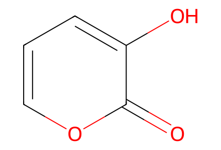
O=c1occcc1OMain synthetic scheme and SI preparations 3–26. Explicit late cage stereochemical review boundary. Facts compiled deterministically; independent review pending.
完整 JSON · 逐步 CSV · 路线序列 · SDF · HRMS 核对
| 事件 | 分子连接 | 报告产率 | Canonical reaction SMILES |
|---|---|---|---|
| E01 | 3-hydroxypyrone → SI-1 | SI-1: 67% | O=c1occcc1O>>CC(C)[Si](Oc1cccoc1=O)(C(C)C)C(C)C |
| E02 | SI-1 + alkylating-iodide → SI-2 | SI-2: 75% | C=C(CCl)CI.CC(C)[Si](Oc1cccoc1=O)(C(C)C)C(C)C>>C=C(CCl)Cc1ccc(O[Si](C(C)C)(C(C)C)C(C)C)c(=O)o1 |
| E03 | SI-2 → 10 | 10: 80% | C=C(CCl)Cc1ccc(O[Si](C(C)C)(C(C)C)C(C)C)c(=O)o1>>C=C(CCl)Cc1ccc(O)c(=O)o1 |
| E04 | aryl-aldehyde → SI-3 | SI-3: 42% | COc1cc(O)cc(C=O)c1>>COc1cc(C=O)cc(O[Si](C(C)C)(C(C)C)C(C)C)c1 |
| E05 | SI-3 + methyl-propiolate → SI-4 | SI-4: 44% | C#CC(=O)OC.COc1cc(C=O)cc(O[Si](C(C)C)(C(C)C)C(C)C)c1>>COC(=O)C#CC(O)c1cc(OC)cc(O[Si](C(C)C)(C(C)C)C(C)C)c1 |
| E06 | SI-4 → 11 | 11: 74% | COC(=O)C#CC(O)c1cc(OC)cc(O[Si](C(C)C)(C(C)C)C(C)C)c1>>COC(=O)/C=C/C(=O)c1cc(OC)cc(O[Si](C(C)C)(C(C)C)C(C)C)c1 |
| E07 | 10 + 11 → 12 | 12: 85% | C=C(CCl)Cc1ccc(O)c(=O)o1.COC(=O)/C=C/C(=O)c1cc(OC)cc(O[Si](C(C)C)(C(C)C)C(C)C)c1>>C=C(CCl)CC12C=CC(O)(C(=O)O1)C(C(=O)c1cc(OC)cc(O[Si](C(C)C)(C(C)C)C(C)C)c1)C2C(=O)OC |
| E08 | 12 → 13 | not reported | C=C(CCl)CC12C=CC(O)(C(=O)O1)C(C(=O)c1cc(OC)cc(O[Si](C(C)C)(C(C)C)C(C)C)c1)C2C(=O)OC>>C=C(CCl)CC12C=CC(O[Si](C)(C)C)(C(=O)O1)C(C(=O)c1cc(OC)cc(O[Si](C(C)C)(C(C)C)C(C)C)c1)C2C(=O)OC |
| E09 | 13 → 16 | 63% combined mixture yield | C=C(CCl)CC12C=CC(O[Si](C)(C)C)(C(=O)O1)C(C(=O)c1cc(OC)cc(O[Si](C(C)C)(C(C)C)C(C)C)c1)C2C(=O)OC>>C=C(CCl)CC1(O)C=CC2(O)C(O)OC(c3cc(OC)cc(O[Si](C(C)C)(C(C)C)C(C)C)c3)C2C1C(=O)OC |
| E10 | 16 → 18 | 52% combined mixture yield | C=C(CCl)CC1(O)C=CC2(O)C(O)OC(c3cc(OC)cc(O[Si](C(C)C)(C(C)C)C(C)C)c3)C2C1C(=O)OC>>C=C(CCl)CC12C=CC3(O)C(O1)c1c(OC)cc(O[Si](C(C)C)(C(C)C)C(C)C)cc1C(O)C3C2C(=O)OC |
| E11 | 18 → SI-5 | not reported | C=C(CCl)CC12C=CC3(O)C(O1)c1c(OC)cc(O[Si](C(C)C)(C(C)C)C(C)C)cc1C(O)C3C2C(=O)OC>>C=C(CI)CC12C=CC3(O)C(O1)c1c(OC)cc(O[Si](C(C)C)(C(C)C)C(C)C)cc1C(O)C3C2C(=O)OC |
| E12 | SI-5 → 19 | 19: 65% | C=C(CI)CC12C=CC3(O)C(O1)c1c(OC)cc(O[Si](C(C)C)(C(C)C)C(C)C)cc1C(O)C3C2C(=O)OC>>COc1cc(O[Si](C(C)C)(C(C)C)C(C)C)cc2c1C1OC34C=CC1(O)C(C2O)C3C(=O)C=C(C)C4 |
| E13 | 19 → 20 | 20: 50% | COc1cc(O[Si](C(C)C)(C(C)C)C(C)C)cc2c1C1OC34C=CC1(O)C(C2O)C3C(=O)C=C(C)C4>>COc1cc(O[Si](C(C)C)(C(C)C)C(C)C)cc2c1C1OC34C=CC1(O)C(C2O)C3C(=O)CC(C)(O)C4 |
| E14 | 20 → 21 | 21: 71% | COc1cc(O[Si](C(C)C)(C(C)C)C(C)C)cc2c1C1OC34C=CC1(O)C(C2O)C3C(=O)CC(C)(O)C4>>COc1cc(O[Si](C(C)C)(C(C)C)C(C)C)cc2c1C(O)C1(O)C=CC3=C(C(=O)CC(C)(O)C3)C1C2O |
| E15 | 21 + S-methylisothiourea → 24 | 24: 52% | COc1cc(O[Si](C(C)C)(C(C)C)C(C)C)cc2c1C(O)C1(O)C=CC3=C(C(=O)CC(C)(O)C3)C1C2O.CSC(=N)N>>COc1cc(O[Si](C(C)C)(C(C)C)C(C)C)cc2c1[C@H]1O[C@]34C[C@@H](SC)C1(O)C1C3[C@@](O)(C[C@](C)(O)C4)O[C@@H]21 |
| E16 | 24 → 25 | 88% combined mixture yield | COc1cc(O[Si](C(C)C)(C(C)C)C(C)C)cc2c1[C@H]1O[C@]34C[C@@H](SC)C1(O)C1C3[C@@](O)(C[C@](C)(O)C4)O[C@@H]21>>COc1cc(O[Si](C(C)C)(C(C)C)C(C)C)cc2c1[C@H]1O[C@]34C[C@@H]([S@](C)=O)C1(O)C1C3[C@@](OC)(C[C@](C)(O)C4)O[C@@H]21 |
| E17 | 25 → SI-6 | SI-6: 73% | COc1cc(O[Si](C(C)C)(C(C)C)C(C)C)cc2c1[C@H]1O[C@]34C[C@@H]([S@](C)=O)C1(O)C1C3[C@@](OC)(C[C@](C)(O)C4)O[C@@H]21>>COc1cc(OS(=O)(=O)C(F)(F)F)cc2c1[C@H]1O[C@]34C[C@@H]([S@](C)=O)C1(O)C1C3[C@@](OC)(C[C@](C)(O)C4)O[C@@H]21 |
| E18 | SI-6 → 1 | 1: 48% | COc1cc(OS(=O)(=O)C(F)(F)F)cc2c1[C@H]1O[C@]34C[C@@H]([S@](C)=O)C1(O)C1C3[C@@](OC)(C[C@](C)(O)C4)O[C@@H]21>>COc1cccc2c1[C@H]1O[C@]34C[C@@H]([S@](C)=O)C1(O)C1C3[C@@](OC)(C[C@](C)(O)C4)O[C@@H]21 |

O=c1occcc1O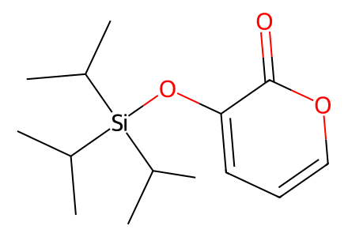
CC(C)[Si](Oc1cccoc1=O)(C(C)C)C(C)C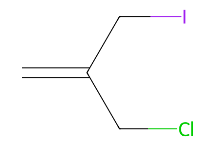
C=C(CCl)CI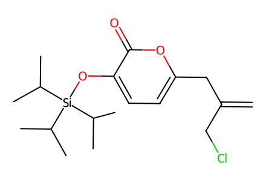
C=C(CCl)Cc1ccc(O[Si](C(C)C)(C(C)C)C(C)C)c(=O)o1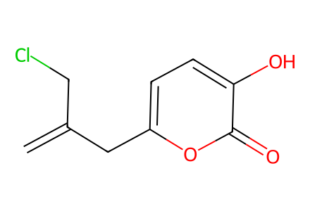
C=C(CCl)Cc1ccc(O)c(=O)o1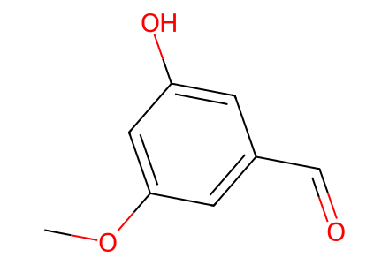
COc1cc(O)cc(C=O)c1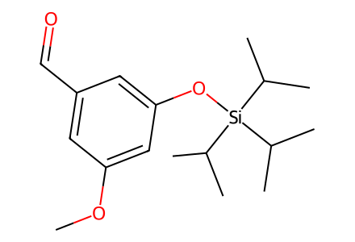
COc1cc(C=O)cc(O[Si](C(C)C)(C(C)C)C(C)C)c1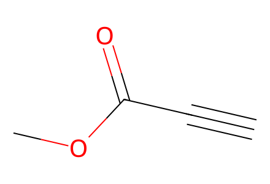
C#CC(=O)OC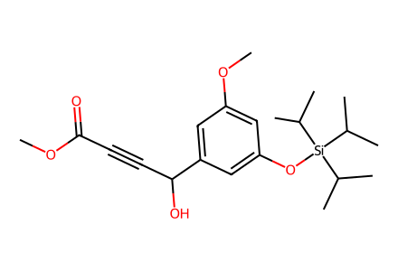
COC(=O)C#CC(O)c1cc(OC)cc(O[Si](C(C)C)(C(C)C)C(C)C)c1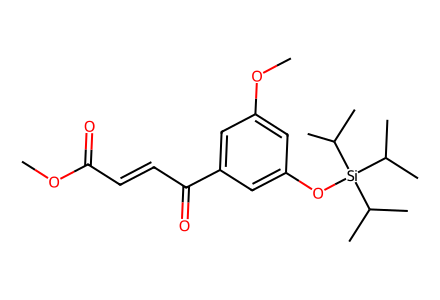
COC(=O)/C=C/C(=O)c1cc(OC)cc(O[Si](C(C)C)(C(C)C)C(C)C)c1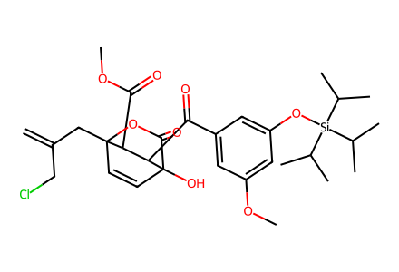
C=C(CCl)CC12C=CC(O)(C(=O)O1)C(C(=O)c1cc(OC)cc(O[Si](C(C)C)(C(C)C)C(C)C)c1)C2C(=O)OC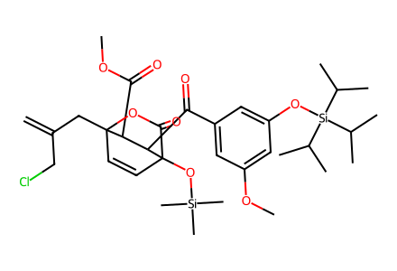
C=C(CCl)CC12C=CC(O[Si](C)(C)C)(C(=O)O1)C(C(=O)c1cc(OC)cc(O[Si](C(C)C)(C(C)C)C(C)C)c1)C2C(=O)OC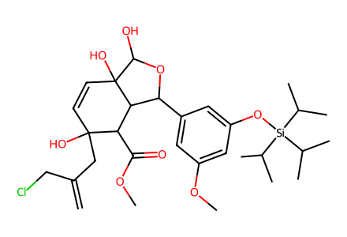
C=C(CCl)CC1(O)C=CC2(O)C(O)OC(c3cc(OC)cc(O[Si](C(C)C)(C(C)C)C(C)C)c3)C2C1C(=O)OC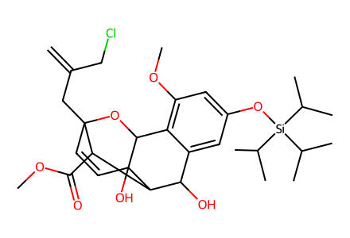
C=C(CCl)CC12C=CC3(O)C(O1)c1c(OC)cc(O[Si](C(C)C)(C(C)C)C(C)C)cc1C(O)C3C2C(=O)OC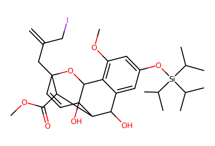
C=C(CI)CC12C=CC3(O)C(O1)c1c(OC)cc(O[Si](C(C)C)(C(C)C)C(C)C)cc1C(O)C3C2C(=O)OC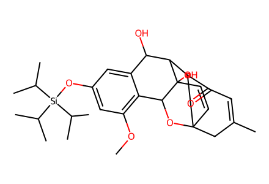
COc1cc(O[Si](C(C)C)(C(C)C)C(C)C)cc2c1C1OC34C=CC1(O)C(C2O)C3C(=O)C=C(C)C4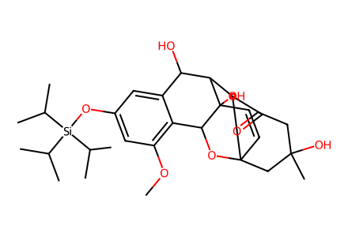
COc1cc(O[Si](C(C)C)(C(C)C)C(C)C)cc2c1C1OC34C=CC1(O)C(C2O)C3C(=O)CC(C)(O)C4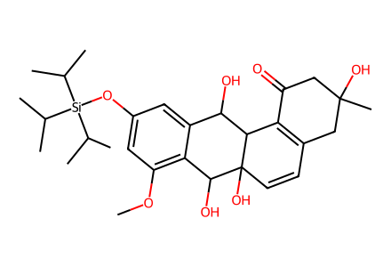
COc1cc(O[Si](C(C)C)(C(C)C)C(C)C)cc2c1C(O)C1(O)C=CC3=C(C(=O)CC(C)(O)C3)C1C2O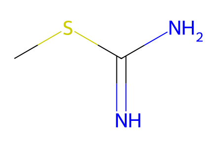
CSC(=N)N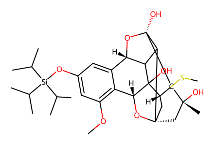
COc1cc(O[Si](C(C)C)(C(C)C)C(C)C)cc2c1[C@H]1O[C@]34C[C@@H](SC)C1(O)C1C3[C@@](O)(C[C@](C)(O)C4)O[C@@H]21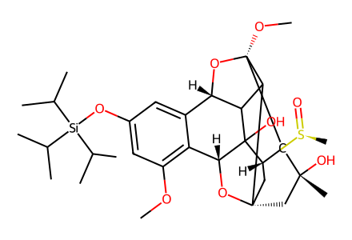
COc1cc(O[Si](C(C)C)(C(C)C)C(C)C)cc2c1[C@H]1O[C@]34C[C@@H]([S@](C)=O)C1(O)C1C3[C@@](OC)(C[C@](C)(O)C4)O[C@@H]21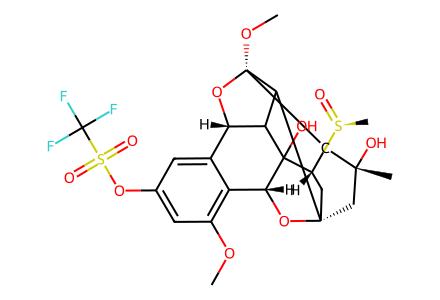
COc1cc(OS(=O)(=O)C(F)(F)F)cc2c1[C@H]1O[C@]34C[C@@H]([S@](C)=O)C1(O)C1C3[C@@](OC)(C[C@](C)(O)C4)O[C@@H]21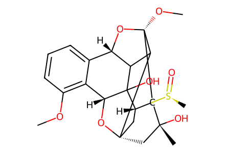
COc1cccc2c1[C@H]1O[C@]34C[C@@H]([S@](C)=O)C1(O)C1C3[C@@](OC)(C[C@](C)(O)C4)O[C@@H]21